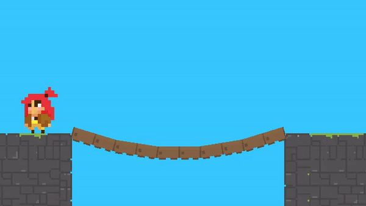

Bridge
A bridge creates dynamic movement. Characters can walk and jump on them. Place this component on an empty gameobject and scene gizmos will appear. The gameobject’s position is the start position of the bridge, and the red gizmo will modify the end position.
{kind=link}
Tip
Characters, by default, are enabled to interact with bridges. If this property is not desired, disable it in the character’s collision settings to save unnecessary collision checks.
Property |
|
|---|---|
Planks |
The number of planks in the bridge. |
Gravity |
The force of gravity acting on the bridge. |
Bounce |
The force exerted on the bridge when interacting with characters. |
Stiffness |
The larger the number, the less sag the bridge will have. For performance, keep this value below 30. |
Plank |
The system will create a gameobject for a plank with the corresponding sprite. This will be used as a template to instantiate the remaining planks. You can change the transform’s scale to achieve the desired plank width. The offset will shift each plank visually. |
Area |
The system will check for plank collisions once the character is inside the bridge area. The area width is set automatically, but the height must be specified. The offset will offset the area in the y direction. |
Create |
Once all the settings are chosen, press this button to create the bridge. Anytime you change a position or a setting, recreate the bridge to enact the changes. |
View |
If enabled, the bridge gizmos will be visible. |
Important
The start of the bridge corresponds to the transform’s position. Make sure the transform’s handle position is set to Pivot (and not to Center) for proper placement. A scene handle tool, a red circle, is used to specify the end of the bridge. The distance between the start and end points determines the length of the bridge.